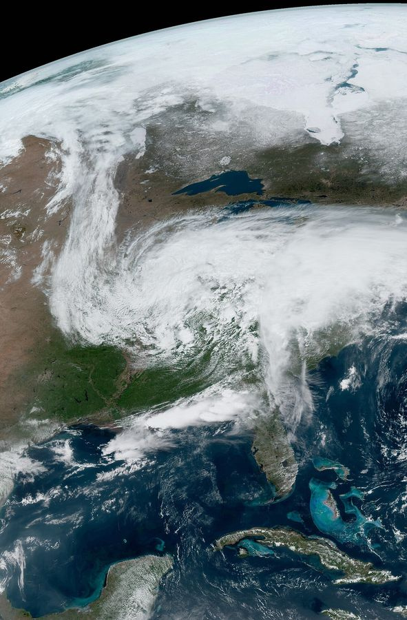

질문일기 예보에서 “고기압의 영향으로 맑겠습니다”라는 말을 자주 듣습니다. 기압이 높은 것과 구름이 없는 것은 어떻게 이어질까요?
복원공기가 올라가면 주위 기압이 낮아져 부피가 커지고, 그 일에 에너지를 써서 식습니다(단열 팽창). 내려오면 반대로 압축되어 따뜻해집니다(단열 압축).
설명저기압 중심으로 모여든 공기는 갈 곳이 위뿐이라 상승합니다. 오르며 식다가 기온이 이슬점에 닿으면 수증기가 응결해 구름이 됩니다. 이 높이가 상승 응결 고도이고, 대략 125 × (기온 − 이슬점) m입니다.
연결고기압에서는 공기가 지표에서 밖으로 퍼져 나가고, 그 빈자리를 상공의 공기가 내려와 채웁니다. 내려오는 공기는 1 km마다 약 10 °C씩 데워지지만 이슬점은 약 2 °C만 올라, 둘의 차이가 벌어집니다. 상대 습도가 떨어지고 구름은 증발합니다.
적용상승 기류에서 이슬점을 기온에 가깝게 올려 보세요. 구름 밑면이 어떻게 바뀌나요? 하강 기류로 바꾸고, 3 km 높이의 구름 속 공기(기온 = 이슬점)가 지표까지 내려오면 상대 습도가 얼마가 되는지 확인하세요.
판단고기압이라고 늘 맑지는 않습니다. 겨울 시베리아 고기압에서 나온 찬 공기가 따뜻한 서해를 건너면 아래에서 수증기와 열을 받아 눈구름이 생깁니다. ‘고기압 = 맑음’은 하강 기류가 지배할 때의 이야기입니다. 이 그래프의 감률은 교과서에서 쓰는 근사값입니다.
확인조건이 달라지면
지표의 기온이 30 °C, 이슬점이 14 °C인 공기가 산을 타고 올라갑니다. 구름 밑면은 대략 몇 m 높이에 생길까요?
1.3.3
온대 저기압이 지나가면 날씨는 어떤 순서로 바뀔까?
온난 전선 · 한랭 전선 · 모식 일기도
기온
—
기압
—
풍향
—
날씨
—
질문봄철 온대 저기압이 서쪽에서 다가옵니다. 이틀 동안 우리 동네의 하늘, 기온, 바람은 어떤 순서로 바뀔까요?
복원온대 저기압은 찬 공기와 따뜻한 공기가 만나는 곳에서 생깁니다. 중심에서 동쪽으로 온난 전선, 남서쪽으로 한랭 전선이 뻗고, 두 전선 사이에 따뜻한 공기가 있습니다. 우리나라 부근에서는 편서풍을 타고 서쪽에서 동쪽으로 이동합니다.
설명온난 전선에서는 따뜻한 공기가 찬 공기 위로 완만하게 타고 올라 넓은 층운형 구름과 오래 이어지는 비를 만듭니다. 한랭 전선에서는 찬 공기가 따뜻한 공기 밑을 파고들어 급하게 밀어 올리므로, 좁은 띠에 적운형 구름과 소나기·뇌우가 생깁니다.
연결관측소가 중심의 남쪽에 있으면 온난 전선 통과 뒤 기온이 오르고 바람이 남동풍에서 남서풍으로, 한랭 전선 통과 뒤에는 기온이 뚝 떨어지고 북서풍으로 바뀝니다. 풍향이 시계 방향으로 돕니다.
적용‘재생’을 누르거나 시각을 옮기며 아래 기록을 보세요. 기압이 가장 낮은 때는 언제인가요? ‘연직 단면’에서 두 전선면의 기울기를 비교해 보세요. 관측소를 중심의 북쪽으로 옮기면 풍향은 어느 방향으로 돌고, 기온 변화는 어떻게 달라지나요?
판단이 일기도는 전형적인 구조를 보이려는 모식입니다. 실제 저기압은 모양, 속도, 전선의 기울기가 제각각이고, 발달하면서 한랭 전선이 온난 전선을 따라잡아 폐색 전선이 되기도 합니다. 연직 단면은 높이를 크게 과장해 그렸습니다(실제 전선면 기울기는 약 1/50~1/300).
확인조건이 달라지면
어느 관측소에서 남서풍이 불며 따뜻하던 날씨가, 소나기가 쏟아진 뒤 갑자기 북서풍으로 바뀌고 기온이 크게 떨어졌습니다. 방금 무엇이 지나갔을까요?
1.3.4
위성 영상과 레이더 영상은 각각 무엇을 보여 줄까?
읽기 · 가시·적외 영상, 레이더, 저기압의 규모
일기도에는 기압과 전선이 그려져 있지만 구름과 비는 보이지 않습니다. 예보관은 일기도와 함께 기상 위성 영상과 레이더 영상을 겹쳐 봅니다. 세 자료는 각각 무엇을 알려 줄까요?
1위에서 본 중위도 저기압

2022년 5월 미국 동부를 지나던 중위도 저기압. 저기압 중심 둘레로 구름이 반시계 방향으로 휘감기고, 남쪽으로 한랭 전선을 따라 긴 구름띠가 뻗어 전체가 쉼표 모양을 이룹니다. 우리나라를 지나는 저기압도 같은 모양입니다.
영상: NOAA GOES-16 (지오컬러 합성) · 퍼블릭 도메인 · Wikimedia Commons
2세 가지 영상 비교하기
자료
무엇을 재나
밝게(강하게) 보이는 곳
한계
가시 영상
구름과 지표가 반사한 햇빛
두껍고 물방울이 많은 구름 (적란운, 두꺼운 층운)
밤에는 쓸 수 없음. 구름의 높이는 알기 어려움
적외 영상
구름과 지표가 내보내는 적외선 → 온도
온도가 낮은 곳, 곧 꼭대기가 높은 구름 (적란운, 권운)
낮고 따뜻한 구름(안개, 층운)은 지표와 구별이 어려움
수증기 영상
대기 중·상층의 수증기가 내보내는 적외선
상층에 수증기가 많은 곳
지표 근처의 수증기는 보이지 않음
레이더 영상
지상에서 쏜 전파가 빗방울·눈송이에 반사되어 돌아오는 세기와 시간
강수가 강한 곳 (반사 강도가 큼)
구름 자체보다 강수를 봄. 수백 km 안쪽만 관측
그래서 두 위성 영상을 함께 보면 구름의 종류를 가늠할 수 있습니다. 가시 영상과 적외 영상에서 모두 밝으면 두껍고 높이 솟은 적란운으로, 소나기와 뇌우를 몰고 옵니다. 적외 영상에서는 밝은데 가시 영상에서는 흐리면 높지만 얇은 권운입니다. 가시 영상에서만 밝으면 낮게 깔린 층운이나 안개입니다. 레이더는 전파가 되돌아오는 시간으로 비가 내리는 곳까지의 거리를 재고, 반사 세기로 비의 세기를 추정합니다. 10분 간격 영상을 이어 보면 비구름이 어느 쪽으로 얼마나 빨리 움직이는지도 알 수 있습니다.
3규모가 다른 두 종류의 저기압
전선을 동반한 중위도 저기압(종관 규모): 지름이 수천 km이고 며칠에 걸쳐 편서풍을 타고 서쪽에서 동쪽으로 지나갑니다. 위성 영상에서는 쉼표 모양 구름으로, 레이더에서는 온난 전선 앞의 넓고 약한 비와 한랭 전선을 따라 좁고 강한 비의 띠로 보입니다.
중규모 저기압: 지름이 수~수십 km이고 몇 시간 안에 생겼다 사라집니다. 여름 오후에 강한 햇빛으로 데워진 공기가 솟아 적란운이 발달하면서 생기며, 좁은 지역에 소나기(스콜)와 벼락, 우박을 뿌립니다. 일기도에는 거의 나타나지 않아 위성과 레이더 영상이 특히 중요합니다.
판단“구름이 있으면 비가 온다”, “위성 영상에서 하얀 곳은 모두 비가 오는 곳이다”는 오개념입니다. 위성은 구름 윗면을 보고, 레이더는 떨어지는 강수를 봅니다. 두꺼운 구름 아래에서도 비가 오지 않을 수 있고, 권운처럼 높은 구름은 적외 영상에서 하얗게 보여도 비를 뿌리지 않습니다.
확인조건이 달라지면
새벽 3시, 서해 상공의 구름을 살펴 내일 아침 소나기 가능성을 판단하려고 합니다. 가장 쓸모 있는 자료의 짝은?
1.3.5
일기도, 위성 영상, 레이더를 함께 보면 내일 날씨를 맞힐 수 있을까?
일기 예보 · 세 자료 겹쳐 보기 · 가상 사례
자료
예측 시점
12시간 뒤 비
기온 (지금보다)
풍향
서울 기압
—
서울 기온
—
서울 바람
—
서울 날씨
—
예측 시점을 고르면 그 시각까지의 서울 관측만 보입니다. 지도와 영상을 읽고 12시간 뒤를 예측해 보세요.
실제 날짜가 아닌 가상의 모식 사례입니다. 봄철에 흔한 온대 저기압과 뒤따르는 이동성 고기압을 단순한 식으로 만들었고, 기압·기온·강수 값은 실제 관측이 아닌 모형 값입니다. 등압선 4 hPa 간격, 풍향은 기압 경도에 지표 마찰(30° 안쪽으로 꺾임)을 넣어 구했습니다. 점선 원은 레이더 관측 범위(모식)입니다. 육지 윤곽: Natural Earth(퍼블릭 도메인).
질문예보관은 일기도 한 장만 보고 예보하지 않습니다. 기압 배치(일기도), 구름(위성), 비(레이더)를 겹쳐 보고 시간에 따라 어떻게 움직이는지 따라갑니다. 이 세 자료로 서울의 12시간 뒤 날씨를 맞힐 수 있을까요?
복원우리나라 부근의 저기압과 고기압은 편서풍을 타고 대체로 서쪽에서 동쪽으로 하루 수백~천 km씩 움직입니다. 온대 저기압 동쪽에는 온난 전선, 남서쪽에는 한랭 전선이 있고, 바람은 등압선을 비스듬히 가로질러 저기압 쪽으로 붑니다.
설명세 자료는 보는 것이 다릅니다. 일기도는 기압 배치와 전선을, 적외 위성 영상은 구름 꼭대기가 차가운(높은) 곳을 밝게, 레이더는 지금 비가 내리는 곳과 세기를 보여 줍니다. 온난 전선 앞에는 넓은 구름과 약한 비, 한랭 전선을 따라서는 좁은 띠의 강한 비가 보입니다.
연결예보의 기본은 외삽입니다. 저기압 중심과 전선이 6시간에 얼마나 움직였는지 보고, 같은 속도로 12시간 더 가면 서울이 전선의 어느 쪽에 놓일지 따져 봅니다. 전선의 어느 쪽에 있느냐가 풍향과 기온을 정합니다.
적용예측 시점 세 곳을 차례로 골라 보세요. 각 시점에서 시각 막대를 앞뒤로 6시간만 움직여 저기압이 움직이는 방향과 속도를 재고, 위성·레이더를 켜서 서울 서쪽에 무엇이 다가오는지 확인한 뒤 비·기온·풍향을 고르고 관측과 비교하세요.
판단실제 저기압은 이동하면서 발달하거나 약해지고, 속도와 방향도 바뀝니다. 그래서 외삽만으로는 하루 이틀 뒤를 맞히기 어렵고, 기상청은 대기의 운동 방정식을 컴퓨터로 푸는 수치 예보 모델과 여러 번 돌린 결과의 퍼짐(앙상블)을 함께 씁니다. 이 카드의 사례는 모식이라 실제보다 훨씬 규칙적으로 움직입니다.
확인다른 자료 조합
어느 날 서해 상의 적외 위성 영상에는 남서–북동으로 길고 좁은 밝은 구름띠가 보이고, 레이더에는 그 띠를 따라 강한 강수 에코(시간당 10 mm 이상)가 줄지어 있습니다. 띠는 동쪽으로 시속 40 km쯤 움직이고 있으며, 서울에서 서쪽으로 약 200 km 떨어져 있습니다. 서울의 앞으로 날씨로 가장 알맞은 것은?
1.3.6
봄가을 날씨는 왜 사나흘마다 바뀔까?
읽기 · 이동성 고기압과 온대 저기압 · 기상 현상의 규모
봄과 가을에는 맑고 건조한 날이 이어지다가 하루쯤 흐리고 비가 온 뒤 다시 맑아지는 일이 되풀이됩니다. 여름 장마나 겨울 한파처럼 한 가지 날씨가 오래 머물지 않는 까닭은 무엇일까요?
1편서풍 파동이 고기압과 저기압을 줄지어 보낸다
중위도 상공에는 서쪽에서 동쪽으로 부는 편서풍이 남북으로 굽이치며 흐릅니다. 남쪽으로 처진 곳을 기압골, 북쪽으로 솟은 곳을 기압 마루라고 합니다. 기압골의 동쪽 아래에서는 지상 저기압이, 마루의 동쪽 아래에서는 지상 고기압이 잘 생깁니다. 그래서 지상에는 고기압과 저기압이 번갈아 늘어서고, 파동 전체가 편서풍을 타고 하루 수백~1000 km씩 동쪽으로 움직입니다.
한 지점에서 보면 저기압과 저기압 사이 거리(수천 km)를 이동 속도로 나눈 시간마다 저기압이 찾아오고, 그 사이에 고기압이 지나갑니다. 이것이 대략 사나흘에서 닷새 간격으로 날씨가 바뀌는 까닭입니다.
상층 편서풍 파동과 지상 기압계의 관계(모식). 기압골 동쪽에 저기압, 마루 동쪽에 고기압이 놓여 함께 동쪽으로 움직입니다.
2이동성 고기압: 맑고, 건조하고, 일교차가 크다
봄과 가을에 우리나라를 지나는 고기압은 주로 중국 화중 지방의 따뜻하고 건조한 양쯔강 기단에서 떨어져 나와 편서풍을 타고 옵니다. 한곳에 머물지 않으므로 이동성 고기압이라고 부릅니다. 고기압 중심 부근에서는 공기가 내려오며 데워지므로 구름이 생기기 어렵습니다. 하늘이 맑고 바람이 약하니 낮에는 햇빛을 그대로 받아 따뜻하고, 밤에는 지표의 열이 우주로 빠져나가 기온이 크게 떨어집니다. 그래서 일교차가 크고, 새벽에 안개나 서리가 끼기 쉽습니다. 공기가 건조해 봄철 산불이 잘 번지고, 저기압이 지나간 뒤 다가오는 고기압 앞쪽의 북서풍을 타고 황사가 들어오기도 합니다.
3온대 저기압: 전선과 비를 몰고 온다
고기압 사이의 기압골에서는 찬 공기와 따뜻한 공기가 만나 온대 저기압이 발달합니다. 온난 전선 앞에서는 넓은 구름과 약한 비가 오래 내리고, 한랭 전선이 지나면 짧고 강한 비 뒤에 북서풍이 불며 기온이 내려갑니다. 저기압이 빠져나가면 다음 고기압이 들어와 다시 맑아집니다.
이동성 고기압
온대 저기압
공기 흐름
중심에서 내려와 시계 방향으로 불어 나감
시계 반대 방향으로 불어 들어와 올라감
날씨
맑음, 건조, 바람 약함, 일교차 큼
흐림, 비, 전선 통과 때 풍향·기온 변화
위성 영상
구름 없는 넓은 영역
쉼표 모양 구름, 한랭 전선을 따라 긴 구름띠
레이더 영상
에코가 거의 없음
온난 전선 앞의 넓고 약한 에코, 한랭 전선의 좁고 강한 띠
4기상 현상의 규모: 크기와 수명은 함께 간다
기상 현상은 크기가 클수록 오래 갑니다. 일기도의 고기압과 저기압처럼 수평 크기 1000 km 안팎, 수명 며칠인 현상을 종관 규모라고 합니다. 그보다 작은 중규모 현상은 수십~수백 km 크기로 몇 시간에서 하루 안에 생겼다 사라집니다. 여름 집중 호우는 대개 장마 전선이나 종관 규모 저기압 속에서 생긴 중규모 현상입니다.
규모
수평 크기
수명
예
위성·레이더로 보면
행성 규모
수천~1만 km 이상
1주 이상
편서풍 파동, 북태평양 고기압
여러 날의 영상을 이어 보아야 드러남
종관 규모
수백~수천 km
며칠
온대 저기압, 이동성 고기압, 태풍
위성 영상 한 장에 전체 모습이 담김(쉼표 구름, 맑은 영역, 나선 구름)
중규모
수십~수백 km
몇 시간~하루
장마 전선 위 중규모 저기압, 집중 호우를 일으키는 중규모 대류계, 해풍
적외 영상에서 매우 밝고 둥근 구름 덩어리(꼭대기가 높고 차가움), 레이더에서 한곳에 머물거나 줄지어 지나가는 강한 에코
소규모
수십 m~수 km
몇 분~1시간
뇌우 세포 하나, 돌풍, 토네이도
레이더의 작은 강한 에코 한 점, 위성으로는 구별하기 어려움
규모가 작을수록 예보가 어렵습니다. 종관 규모 저기압은 수치 예보 모델로 며칠 앞서 예상할 수 있지만, 집중 호우를 일으키는 중규모 대류계는 어디에서 생길지 몇 시간 전에야 드러나는 경우가 많습니다. 그래서 집중 호우 감시에는 몇 분마다 새로 찍는 레이더 영상과 위성 영상이 특히 중요합니다.
판단"사나흘마다 바뀐다"는 평균적인 경향일 뿐 정해진 주기가 아닙니다. 파동이 느려지거나 멈추면(저지 고기압) 같은 날씨가 한 주 넘게 이어지기도 합니다. 또 "고기압이면 늘 맑다"도 조건이 붙습니다. 겨울에 시베리아 고기압이 확장하면 찬 공기가 따뜻한 서해를 건너며 눈구름을 만들어, 고기압의 영향 아래에서도 서해안에 폭설이 내립니다. 여름에는 북태평양 고기압이 오래 버티고 편서풍대가 북쪽으로 물러나 이런 교대가 뚜렷하지 않습니다.
확인가을 밤의 이동성 고기압
10월 어느 날 저녁, 이동성 고기압의 중심이 서해에서 우리나라 쪽으로 다가오고 있습니다. 내일 새벽 내륙 지방의 날씨로 가장 알맞은 것은?